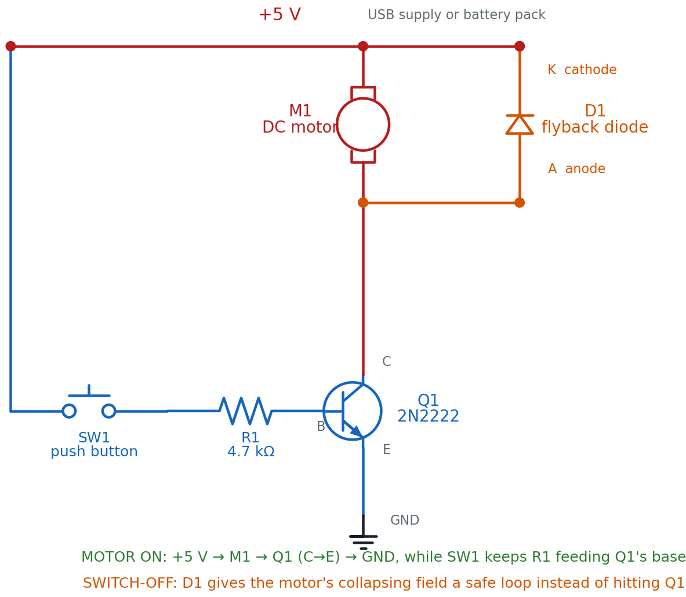
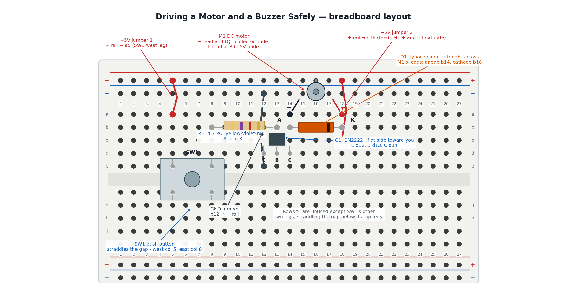

Driving a Motor and a Buzzer Safely
Press a button and a motor spins. Let go and it stops. That much you already know from Chapter 18. Today you build the safe version — the one with a part whose entire job is to protect your transistor the instant you let go.
Welcome back, builder!
 You already made a motor spin. Now you're going to protect the transistor
that switches it, size the resistor that feeds its base, and then reuse
almost the same circuit to make a buzzer sing. Let's light it up!
You already made a motor spin. Now you're going to protect the transistor
that switches it, size the resistor that feeds its base, and then reuse
almost the same circuit to make a buzzer sing. Let's light it up!
What You'll Learn
By the end of this lab you will be able to:
- Build a button-controlled transistor motor driver on a breadboard from a schematic
- Explain what motor back-EMF is and predict what happens to the transistor if the flyback diode is missing or backward
- Calculate the base resistor value for a 2N2222 switching a 100 mA motor from a 5 V supply
- Verify a flyback diode's orientation before power ever reaches the circuit
- Compare an active buzzer's fixed tone against a passive buzzer's need for a changing signal
Before You Start
| Time | 50 minutes (35 for the motor driver, 15 for the buzzer extension) |
| Difficulty | Intermediate — your first circuit with a transistor switching real inductive current |
| You should already know | How a transistor switches a load (Chapter 13: Meet the Transistor), how a base resistor and flyback diode protect a motor circuit (Chapter 18: LEDs, RGB Color, and Motors), and why that diode is there in the first place (Chapter 19: Driving Outputs) |
What You'll Need
Everything here is in the $50 kit.
| Qty | Part | Value or marking | How to spot it |
|---|---|---|---|
| 1 | Breadboard | half-size | the white plastic board with rows of holes |
| 1 | Transistor | 2N2222, NPN | small black TO-92 case, one flat side, three legs |
| 1 | DC motor | small hobby motor, 3-6 V | two wire leads, a spinning shaft on top |
| 1 | Diode | 1N4001 or 1N4148 (flyback diode) | small cylinder, one end marked with a band |
| 1 | Resistor | 4.7 kΩ | tan body, bands yellow-violet-red, then gold |
| 1 | Push button | 4-pin tactile switch | small square button, four legs underneath |
| 3 | Jumper wire | 2 red, 1 black | for the two +5 V connections and the one ground connection |
| 1 | Power supply | 5 V USB, or a 3×AA battery pack | any phone charger with a USB-A male-to-male cable |
| 1 | Active buzzer | 5 V piezo, for Take It Further | small black disc with two leads, marked + and − |
Only one diode value in the kit?
 Either a 1N4001 or a 1N4148 works here — this circuit never asks the diode
to carry much current or switch especially fast. Use whichever one your
kit has.
Either a 1N4001 or a 1N4148 works here — this circuit never asks the diode
to carry much current or switch especially fast. Use whichever one your
kit has.
Safety First
At 5 volts, this circuit cannot hurt you. You can touch every part of it while it runs. The part that needs protecting today is not you — it's the transistor.
- Wire everything first, plug in power last. Every time.
- Unplug before you rewire. Moving a live wire is how you make a short circuit.
- The flyback diode goes in before the motor ever spins, not after. A spinning motor is also a tiny generator. The instant you cut its power, the magnetic field collapsing inside it fires a voltage spike backward through the circuit — high enough to punch through a transistor that handled the motor just fine while it was running. The diode gives that spike a safe loop to fade out in instead. Skip it, and your transistor can die the very first time you release the button.
A motor living a double life
 While it spins, a DC motor is a motor. The instant it switches off, its
collapsing magnetic field turns it into a tiny generator for a fraction
of a second — and generators make voltage of their own, whether you
wanted them to or not. That surprise voltage is called back-EMF
("electromotive force," an older name for voltage).
While it spins, a DC motor is a motor. The instant it switches off, its
collapsing magnetic field turns it into a tiny generator for a fraction
of a second — and generators make voltage of their own, whether you
wanted them to or not. That surprise voltage is called back-EMF
("electromotive force," an older name for voltage).
Try It in the Simulator
This sim builds the exact circuit you're about to wire, plus one extra trick on top: a duty-cycle slider that controls motor speed with PWM instead of a plain on/off button. Try the slider first, then come back and build the fixed-speed, button-controlled version for real.
Three things to try right now:
- Drag the duty-cycle slider from 0% to 100%. Watch the motor's shaft speed change, and notice that 100% duty cycle is exactly the same as a plain switch.
- Watch the flyback diode. It stays dark while the motor runs — it only has a job the instant power switches off.
- Hover the base resistor. That's the part you're about to calculate by hand in a few minutes.
The Circuit Diagram
Here is the same circuit drawn the way engineers draw it.

Read the current's normal path top to bottom: out of +5 V, down through M1, into Q1's collector, out the emitter, into ground — but only while SW1 is pressed and feeding R1 into Q1's base. D1 sits backward across M1 the whole time, doing nothing until the moment M1's current has nowhere else to go.
Why the diode's cathode points at +5 V
A diode only conducts one direction — the way its arrow points, from
anode to cathode. Wired with its cathode toward +5 V, D1 points backward
compared to the motor's normal current flow — which is exactly the point. It stays switched off
(reverse-biased) the entire time the motor runs normally, and only turns
on for that one dangerous instant when the field collapses and the
voltage briefly reverses.
The Breadboard Layout
Now the same circuit on the actual board. This is the picture to copy.

The picture and the schematic show the same circuit. Here is how they line up:
| In the schematic | On the breadboard |
|---|---|
| +5 V rail (feeding SW1) | Red jumper 1, from the + rail into a5 |
| SW1, the push button | Straddles the center gap — west leg column 5, east leg column 8 |
| R1, the 4.7 kΩ base resistor | The tan part bridging b8 and b13 |
| Q1, the 2N2222 | Flat side toward you, legs in d12 (E), d13 (B), d14 (C) |
| Q1's emitter to ground | Dark jumper, from e12 to the − rail |
| M1, the motor's − lead | Plugged into a14 — the same column as Q1's collector |
| M1, the motor's + lead | Plugged into a18 |
| D1, the flyback diode | Anode in b14 (Q1's collector column), cathode in b18 (the +5 V column) |
| +5 V rail (feeding M1 and D1) | Red jumper 2, from the + rail into c18 |
The trick that makes this work is the breadboard's hidden wiring. Column 14's five holes are one connected group, so Q1's collector leg, M1's minus lead, and D1's anode are all joined without a single extra wire. Column 18 does the same job for M1's plus lead, D1's cathode, and the second +5 V jumper.
Build It
Work down the list in order. Do not skip the checkpoints.
- Leave the power unplugged. Do not connect the USB supply or the battery pack yet.
- Seat SW1 straddling the center gap. One pair of legs goes in column 5, the other pair in column 8 — the same trick a DIP chip uses.
- Push a red jumper into a hole on the + rail, and the other end into a5.
- Bend the legs of the 4.7 kΩ resistor (R1) and push them into b8 and b13.
- Insert Q1, the 2N2222, with its flat side facing you. Its three legs go into d12 (emitter), d13 (base), and d14 (collector) — left to right.
- Push a dark jumper into e12, and the other end into a hole on the − rail. This grounds Q1's emitter.
- Insert D1, the flyback diode: the banded (cathode) end into b18, the plain (anode) end into b14.
Stop here and check D1 before anything else goes in.
 Look at the band on your diode. It must be in b18 — the +5 V side —
not b14. A backward or missing flyback diode is the single costliest
mistake in this whole lab: the motor will still spin with it backward,
which means nothing warns you until Q1 has already been damaged. Check
it now, while it's easy, not after something gets hot.
Look at the band on your diode. It must be in b18 — the +5 V side —
not b14. A backward or missing flyback diode is the single costliest
mistake in this whole lab: the motor will still spin with it backward,
which means nothing warns you until Q1 has already been damaged. Check
it now, while it's easy, not after something gets hot.
- Plug the motor's − lead into a14 (the same column as Q1's collector and D1's anode) and its + lead into a18.
- Push a second red jumper into a hole on the + rail, and the other end into c18.
- Checkpoint — before power. Trace the loop out loud: + rail → a5 → SW1 → R1 → Q1 base. Separately: + rail → c18 → M1 → Q1 collector → emitter → e12 → − rail. If either sentence has a gap, find it now.
- Predict first. Write down two guesses: will the motor spin the instant you press SW1, or will there be a short delay? And will it keep spinning as long as you hold the button, or just pulse once?
- Plug in the 5 V supply. Nothing should move yet — SW1 is not pressed.
- Press and hold SW1. The motor should spin immediately and keep spinning until you let go.
You are done when the motor spins the instant you press SW1, stops the instant you release it, and you can point to D1 and explain what it's waiting to do.
That's a protected circuit!
 You didn't just make a motor spin — you built the version that survives
being switched off, over and over, without frying a single part. That's
your superpower in action!
You didn't just make a motor spin — you built the version that survives
being switched off, over and over, without frying a single part. That's
your superpower in action!
How It Works
The base resistor: keeping Q1's base current safe
Chapter 13 taught you the core idea: a small current into a transistor's base controls a much larger current through its collector. R1's whole job is to make sure that small current is exactly small enough.
Here is the math, using this circuit's real numbers — the same worked example from Chapter 14.
The motor draws about 100 mA when it's running. A careful builder sizes R1 for the worst-case gain (β) a real 2N2222 might have — 100 — rather than assuming a better part:
That 1 mA of base current is what R1 has to allow through, no more. With a 5 V supply and Q1's turn-on voltage of about 0.7 V:
There is no 4,300 Ω resistor in your kit, so you round up to the nearest standard value — 4.7 kΩ — which is exactly what R1 is. Rounding up, not down, keeps the base current a little under the target instead of over it.
The flyback diode: giving back-EMF somewhere safe to go
While M1 spins, current flows one direction through it, and D1 sits backward across its leads doing nothing — reverse-biased, blocking, out of the way.
The instant SW1 is released, Q1 stops conducting — but M1's magnetic field doesn't vanish instantly. It collapses, and a collapsing field pushes current the opposite direction, at a voltage that can spike far above 5 V. Without D1, that spike has nowhere to go but straight into Q1. With D1 in place, the spike finally pushes the diode forward, and the motor's own collapsing current simply loops through D1 and back into itself until it fades to nothing — never touching Q1 at all.
Where you've seen this: spin a bicycle wheel with a hub dynamo, or a toy motor's shaft between your fingers, and you'll feel a little grip pushing back — more if you spin it faster. That grip is the same generator effect as back-EMF. A motor spinning inside a circuit does the exact same thing. It just has wires for that push-back to travel down instead of your fingers.
One habit covers every output device
 You don't need to memorize back-EMF, β, and base resistor math all at
once. Just build one habit: before you power any new output device, ask
"does this one push back?" A spinning motor does. An LED doesn't. That
single question is what tells you whether you need a diode.
You don't need to memorize back-EMF, β, and base resistor math all at
once. Just build one habit: before you power any new output device, ask
"does this one push back?" A spinning motor does. An LED doesn't. That
single question is what tells you whether you need a diode.
When It Doesn't Work
Work down this list in order: check power first, then orientation and polarity, then swap one part at a time. Changing several things at once just hides which change actually fixed it.
| What you see | Likely cause | Fix |
|---|---|---|
| Nothing at all, ever | No power reaching the rails | Check the supply is plugged in and both jumpers are fully seated in the rail |
| Motor never spins, even when SW1 is pressed | R1 is the wrong value, or Q1's legs are swapped | Confirm R1 reads 4.7 kΩ (yellow-violet-red) bridging b8 to b13; confirm Q1's flat side faces you with legs in d12 (E), d13 (B), d14 (C) |
| Motor never spins | SW1 is seated in only one column, not straddling the gap | SW1 needs legs in both column 5 and column 8 — one leg group on each side of the center channel |
| Motor spins, but Q1 gets warm or the motor stutters after several presses | Flyback diode missing, or its band is in b14 instead of b18 | Re-seat D1 with the banded (cathode) end in b18, the +5 V side |
| Motor runs weak, or not at all, with everything wired correctly | Motor shaft is jammed, or the battery pack is low | Spin the shaft by hand to check it moves freely; try a fresh battery pack |
| (Extension) Buzzer stays silent when SW1 is pressed | Buzzer polarity reversed | Swap the buzzer's two leads — a backward buzzer at 5 V just stays quiet, it isn't damaged |
Check Your Understanding
Answer each one before you open it.
1. What is motor back-EMF, and when does it actually cause a problem?
Back-EMF is the voltage a spinning motor generates on its own, created by the same magnetic interaction that spins its shaft. While the motor runs normally it isn't dangerous — the danger appears the instant power switches off, when the motor's collapsing magnetic field fires a sharp voltage spike backward, high enough to damage a transistor with no protection in its path.
2. Your motor draws 100 mA, your 2N2222 has a worst-case gain (β) of 100, and you're feeding it from 5 V. What base resistor do you need?
First find the base current the job requires:
Then size the resistor:
There's no 4,300 Ω resistor in the kit, so you round up to the nearest standard value: 4.7 kΩ.
3. You build the circuit but push D1 in backward — anode toward +5 V instead of the collector. Predict what happens the first time you release SW1, and explain why.
The motor will still spin normally while SW1 is held — a backward diode doesn't stop the motor from running. The danger comes at release: with D1 pointing the wrong way, it can't carry the motor's collapsing current safely. That current spike has nowhere to go but into Q1, which can damage or destroy the transistor. This is exactly why the checkpoint happens before power, not after something smells hot.
4. What's the actual difference between an active buzzer and a passive buzzer?
An active buzzer has a tiny oscillator built in — wire it straight to DC power and it beeps immediately at one fixed pitch, just like an LED that only glows one color. A passive buzzer has no oscillator of its own; it needs an external changing signal, like a 555 timer's square wave, to make any sound at all, and that signal's frequency sets the pitch — the audio equivalent of an LED you can dim and blink yourself.
5. Your motor spins fine for the first few button presses, then Q1 starts feeling warm and the motor's spin gets weaker each time. What's the most likely cause, and why does it take a few presses to notice?
A missing or backward flyback diode. Each time SW1 is released, the unprotected back-EMF spike stresses Q1 a little more. A transistor doesn't always fail instantly — it can absorb a few damaging spikes before it's weakened enough to show up as heat and a visibly weaker motor. The fix is the same either way: check D1's band is seated in b18, the +5 V side.
6. Why does R1's calculation use the worst-case gain (β = 100) instead of a 2N2222's typical, often higher, gain?
Different 2N2222s from the same bag can have different real-world gain values — some higher than 100. Sizing R1 for the lowest gain any part in the bag might have guarantees enough base current for every transistor you might grab, not just the best one. A resistor sized for an optimistic gain could under-drive a lower-gain part and never fully switch the motor on.
Take It Further
Challenge: swap the motor for a buzzer. Unplug the power first. Remove M1 from a14 and a18, and plug an active buzzer into the exact same two holes — same transistor, same button, same base resistor, untouched. Nothing else about the circuit changes.
You have succeeded when pressing SW1 produces one steady beep instead of a spin, and releasing it goes silent immediately — proving this is genuinely the same protected switch driving a different load.
Notice what you did not have to rebuild
You can leave D1 unplugged for the buzzer, and nothing bad happens. A
piezo buzzer isn't a coil of wire storing energy in a magnetic field the
way a motor is, so it never fires the back-EMF spike D1 exists to catch.
Same protection habit, different answer for a different part.
See the passive difference, no extra parts needed. An active buzzer beeps the instant it gets power, but a passive buzzer stays silent on plain DC — it needs a changing signal, like a square wave, to make any sound at all. Explore that difference in the sim below instead of rewiring:
Switch the active buzzer on, then try the passive one and drag its frequency slider. You have succeeded when you can explain, in one sentence, why the passive buzzer needs the slider to make sound at all and the active one doesn't.
Learn More
- Chapter 13: Meet the Transistor — the base-current-controls-collector-current idea this whole circuit depends on
- Chapter 18: LEDs, RGB Color, and Motors — where you first spun a motor under transistor control
- Chapter 19: Driving Outputs: Motors, Buzzers, and More — the full explanation of back-EMF, PWM speed control, and both buzzer types
- Lab 45: 555 Timer LED Blinker — builds the kind of self-repeating square wave a passive buzzer needs to make any sound at all
- SparkFun: Motors and Selecting the Right One — an outside tutorial comparing DC motors, servos, and steppers with real photos